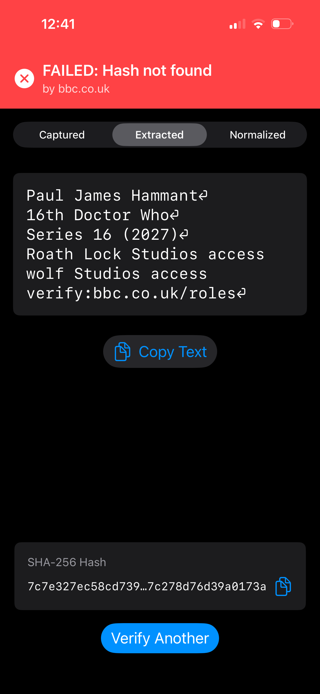
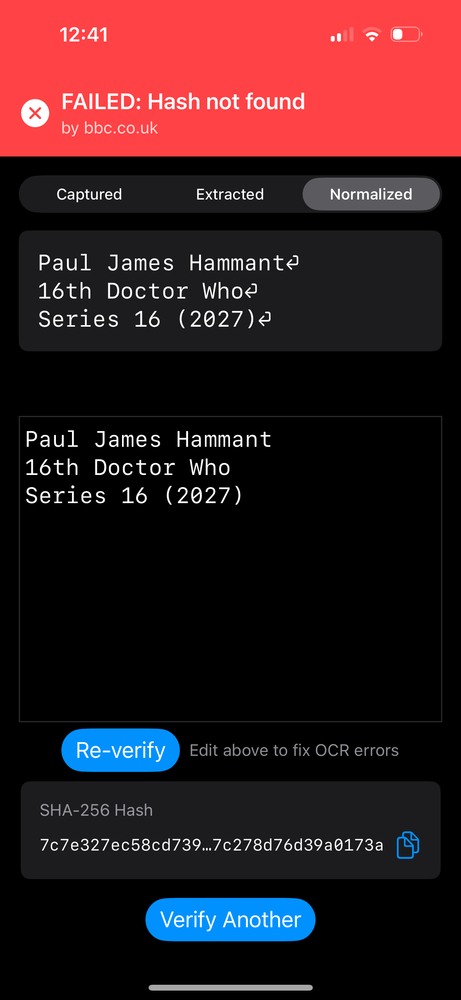

Two OCR Failures on One e-Ink Card — and Why Showing Your Working Beats Hiding It
Here is a small verification failure that says something large about how Live Verify is built. It contains two separate bugs — one I understand completely, and one I don't — and the honest thing to do is show you both, because the whole design of the app is about not hiding either.
The setup
I printed a prop credential onto an e-ink card — a mock BBC role-access pass reading:
Paul James Hammant
16th Doctor Who
Series 16 (2027)
Roath Lock Studios access
Wolf Studios access
verify:bbc.co.uk/roles
bbc.co.uk/roles is fiction,
a showcase prop — there is no such endpoint. The card is a demonstration object, not a real
BBC credential.The hardware is worth naming because it matters to the story: the display is a Vidabay e-ink panel, about $30. A cheap, low-power, reflective e-ink module is exactly the kind of surface a real-world "smart credential" might use — and it is a genuinely harder thing to photograph and OCR than crisp laser-printed paper. Low contrast, a slightly tinted background, and a matte reflective finish are the normal texture of this medium.
I pointed the iOS app at it and got a red banner:
FAILED: Hash not found — by bbc.co.uk
Here is why — twice over.
Bug one (understood): Apple's OCR read "Wolf" as "wolf"
Live Verify works by hashing the exact text of a claim and asking the issuer's domain whether that hash is one it stands behind. SHA-256 is deliberately brittle: change a single byte of input and the output is a completely different hash. That brittleness is the point — it is what makes tampering detectable — but it cuts both ways. If the text the app feeds into the hash differs from the registered text by even one character, the lookup fails. Not "close." Failed.
The app's Extracted tab shows exactly what Apple's Vision OCR pulled off
the image, and there it is on the fifth line — a lowercase w:

The card says "Wolf" (capital W); OCR read "wolf".
W (0x57) and w (0x77) are different bytes, so the hash of the
lowercase version is nothing like the hash the capital-W original would produce.
This isn't Apple being bad at OCR — Vision is excellent. It's that case is genuinely ambiguous at small sizes, especially for letters whose upper- and lowercase forms differ only in scale (c/C, o/O, s/S, w/W, x/X). Photograph those off a low-contrast e-ink panel at a slight angle and a recogniser will occasionally hedge toward the more common lowercase form. "Wolf"/"wolf" is a textbook instance. This bug is real, it is understood, and — crucially — it is recoverable by a human, as we'll see below.
Bug two (unexplained): two whole lines went missing before the hash
This is the more interesting failure, and I am going to be honest that I do not fully know why it happened.
Compare the two tabs. The Extracted tab (raw OCR) has all six lines, including both "Roath Lock Studios access" and "Wolf Studios access." But the Normalized tab — the text that actually gets hashed — shows only three:

Some of that is correct: the verify: line is deliberately excluded
from the hashed text by design. But the two studio-access lines vanishing is not
correct — those are substantive claims (what this person is authorised to access),
and they should have been hashed.
I traced the pipeline that produces the normalized text — URL extraction, cert-text
extraction, normalization — and on the clean six-line text as shown, none of those steps
should drop a non-blank content line. (The one path that legitimately could
rewrite content — issuer-supplied ocrNormalizationRules fetched from a
verification-meta.json — is a no-op here, precisely because the endpoint is
fictional and no metadata was fetched.) So the honest conclusion is that the raw text the
pipeline actually received differed, in some way I can't see from a screenshot, from the
tidy six lines the Extracted tab rendered — perhaps a wrapped line, a stray character, or a
line-index off-by that mis-split the text. Without the exact raw OCR string from
that run, I won't pretend to know which. Diagnosing it properly means capturing
that literal string (a device log line, or a unit test that feeds the six lines through the
pipeline and asserts all five content lines survive) — which is the right next step, and a
good regression guard regardless.
That uncertainty is itself the point of the next section.
Why the app fails loudly and shows its working
The tempting "fix" for bug one is the wrong one. We could silently lowercase everything before hashing, or fuzzy-match, or "try a few variants" until something verifies. Every one of those would have made this card pass — and quietly destroyed the guarantee. A system that massages input until it matches is no longer telling you a document is authentic; it is telling you it found something close enough, which is exactly the ambiguity Live Verify exists to remove. Silent correction turns a verifier into a rubber stamp.
So the app does the opposite. It fails loudly and shows every stage of its working in three tabs:
- Captured — the raw image (here, "No image captured", since this run was fed text).
- Extracted — precisely what OCR produced, character for character. This is where you can see the lowercase "wolf" with your own eyes, and where you can see that both studio lines were read correctly at this stage.
- Normalized — the text after normalization, which is the actual input to the hash. It is editable, with a Re-verify button and the note "Edit above to fix OCR errors."
This transparency is what let me find both bugs at all. Bug one is visible because Extracted shows the exact characters. Bug two is visible because you can hold Extracted and Normalized side by side and see two lines present in one and absent in the other. A system that only showed you a green or red badge would have hidden both. The failure is legible, and legibility is the feature.
For bug one, the editable Normalized pane is the whole philosophy in one control: the app is not asking you to trust it, it is showing you the exact bytes it is about to hash, and letting you fix the one letter and re-verify. The human stays in the loop, and the loop is visible.
Bug two is a reminder that legibility also surfaces defects in the tool itself — and that's good. A transparent pipeline is one you can debug in the field; an opaque one hides its own bugs behind a confident result.
The lessons that generalise
- The hash is unforgiving on purpose, so the input pipeline must be inspectable. You cannot make SHA-256 tolerant without making it useless. The only honest place to absorb OCR imperfection is before the hash, in the open, with a human able to see and correct what the machine read.
- "It failed" is a feature when the failure is legible. A red banner with a visible cause is far more trustworthy than a green banner you can't audit. The worst outcome would be a system that passed this card by guessing.
- Transparency catches the tool's own bugs, not just the document's. The missing-lines defect was findable only because the app shows intermediate state. That's an argument for building every verification tool this way.
- Cheap hardware is a first-class test case, not an edge case. A ~$30 Vidabay e-ink panel is representative of where credentials are actually heading. If the pipeline only works on pristine laser print, it doesn't work.
The failure in those screenshots is not an embarrassment to bury. One half of it is the system behaving exactly as designed — brittle where it must be, transparent everywhere, and honest that it cannot always read an ambiguous capital W off an angled e-ink card in one shot. The other half is a real bug in the tool that the same transparency made visible. Both belong in the open.